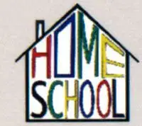

维吉尔·M·希利尔 （Virgil Mores Hillyer, 1875-1931）1875年出生于美国马萨诸塞州韦茅斯，他在华盛顿特区的“国会山”度过其童年，毕业于美国哈佛大学。他是美国著名教育家、卡尔佛特学校首任校长、美国家庭学校（HOMESCHOOL）课程体系创建者。
作为一位教育革新者，希利尔在美国国内和国际上获得了广泛声誉和影响力。他从事教育工作的同时，亲自为孩子们编写教材，在课堂上试讲并修订，受到学校和学生们的赞誉，不少教材至今仍被学校使用。如《美国学生世界地理》、《美国学生世界历史》、《美国学生艺术史》等。他一直探索家庭学校教育理念并设计其课程体系，写作了一本家庭学校教育手册——《在家教出好孩子》，成为父母教育孩子的指南。

欢迎访问家庭学校微博/博客
http://weibo.com/318999618
http://blog.sina.com.cn/homeschoolnow
http://shop34220980.taobao.com（淘宝）
（请访问以上网址下载本书英文朗读文件）